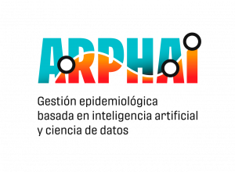

Publications
In this section I list my publications with a brief introduction to the project, my contribution, and links to the paper, the code, and other resources when applicable:
Filling the gap in distribution ranges and conservation status in Ctenomys (Rodentia, Ctenomyidae).
Caraballo, D. A., López, S. L., Botero-Cañola, S., y Gardner, S. L. Journal of Mammalogy, in press
*code
This paper proposes new conservation status based on rewieved Ctenomys distribution areas while checking for they overlap with protected areas and the conservation status of the species from this genus and includes an interactive map. This is made using Rstudio, tidyverse, sf, and leaflet packages.
Digital Health Data: Part of the solution and part of the problem?

L. Ación, L. A. Alemany, A. Guaymás Canavire, S. L. López, M. Maito, F. Penna and D. Yankelevich. 2022
*english version *spanish version
This is a product of an ongoing collaboration between FUNDAR and ARPHAI.
Conservation status, protected area coverage of Ctenomys (Rodentia, Ctenomyidae) species and molecular identification of a population in a national park
Caraballo, D. A., López, S. L., Carmaran, A. A., y Rossi, M. S. Mammalian Biology, vol. 100 p. 33, 2020.
*paper *code
This work collects, reviews and proposes the Ctenomys distribution areas while checks for they overlap with protected areas and the conservation status of the species from this genus and includes an interactive map. This is made using Rstudio, tidyverse, sf and leaflet packages.
Spatiotemporal perturbations in paced finger tapping suggest a common mechanism for the processing of time errors.
López, S. L., y Laje, R. Scientific Reports, vol. 9, p. 1. B, 2019.
*paper *code
In this paper I present part of my results from my PhD about Sensorimotor synchronization, which is one of the paradigmatic behaviors in millisecond timing, where both perception and generation of time patterns take place. Finger tapping involves a finger indicating the pulse of an external periodic stimulus, similar to when you follow the beat of the music with your foot. The time delay between the response tap and the corresponding stimulus is called asynchrony, which makes up the most important observed variable to describe the synchronization phenomenon. Traditionally, finger tapping tasks propose time perturbations that aim to understand the underlying mechanism of error correction. These alterations are achieved by modifying the external stimulus (e.g. it’s period), which presents a limitation as this type of perturbations generates a change in the stimulus parameter (the period), as well as in the variable itself (asynchrony). This study, through the design and construction of a novel device, proposes a new class of time perturbations that originate after a change in the spatial aspects of the task. By shifting the height of the contact point, it’s possible to generate asynchronies without having to modify the stimulus’ period or to alter the period without producing a forced error. This represents a new tool for behavior characterization and the construction of correction theoretic models, as it allows to decouple the effects of traditional time perturbations. It also has implications in other sensorimotor synchronization areas, such as music production and perception, and gait coordination. These disturbances give access to states of the system that were traditionally inaccessible and solve a confounding that has persisted for decades.
The experiment and data acquisition where performed with arduino and Matlab, and data analysis with Matlab.
Vocal caricatures reveal signatures of speaker identity.
López S. L.; Riera, P.; Assaneo, MF.; Eguia, M.; Sigman, M. y Trevisan, M. Scientific Reports, vol. 3, p. 3407, 2013.
*paper
This work for my undergrad thesis was very fun! We built a database with phrases from public figures in Argentina (originals) and copies produced by professional and amateur imitators, in two different registers: without listening to the original audio, that is, using the internal pattern that the imitator has of the character (what we will call caricatures) and the recordings recorded after listening to the original phrase (which we will call imitations). Second, this database allowed us to characterize through perceptual experiments the identity and similarity of the voice, through identification and discrimination instructions that had not been explored together, and that they are different cognitive processes.
Using multidimensional scaling (MDS) techniques and statistical tools, we relate the perceptual space with the acoustic one, based on the main acoustics variables extracted from the audios. The identity of the speaker turned out to be best evoked by the caricatures. Furthermore, we show that the acoustic parameters shared by the caricatures and the originals correspond to the vocal tract, while those shared by imitations and originals are associated with the vocal cords.
These results suggest that, in analogy with visual space, one can speak of acoustic caricatures, which are intended to emphasize the identity features of the speaker, with their own formation rules and containing complex identity information.